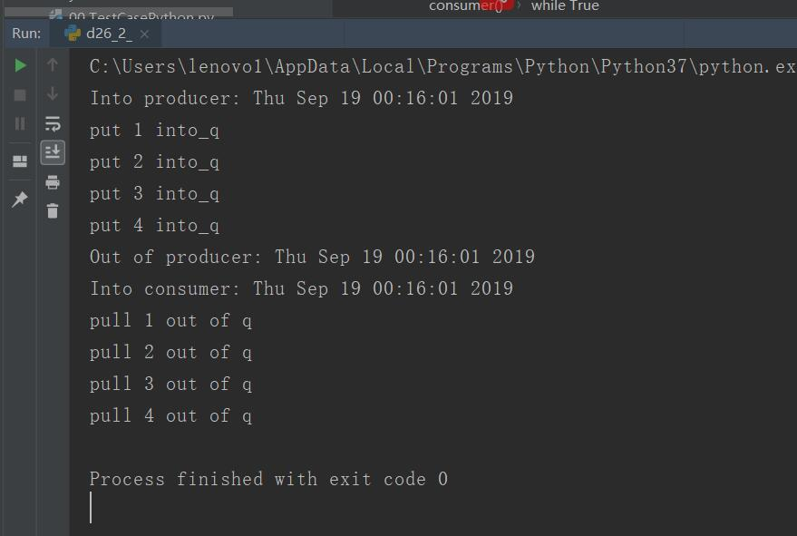
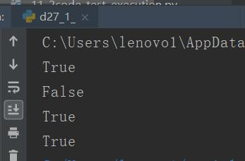

原文出处:本文由博客园博主心悦君兮君不知-睿提供。
原文连接:https://www.cnblogs.com/ruigege0000/p/11546516.html
原文连接:https://www.cnblogs.com/ruigege0000/p/11546516.html
一、生产者消费者模型
import multiprocessing
from time import ctime
def consumer(input_q):
print("Into consumer:",ctime())
while True:
#处理项
item = input_q.get()
print("pull",item,"out of q")#此处替换为有用的工作
input_q.task_done()#发出信号通知任务完成
print("Out of consumer:",ctime()) #此句未执行，因为q.join()收集到四个task_done()信号后，主进程启动
def producer(sequence,output_q):
print("Into producer:",ctime())
for item in sequence:
output_q.put(item)
print("put",item,"into_q")
print("Out of producer:",ctime())
#建立进程
if __name__ == "__main__":
q=multiprocessing.JoinableQueue()
#运行消费者进程
cons_p = multiprocessing.Process(target=consumer,args=(q,))
cons_p.daemon = True
cons_p.start()
#生产多个项，sequence代表要发送给消费者的项序列
#在实践中，这可能是生成器的输出或通过一些其他方式生产出来的
sequence = [1,2,3,4]
producer(sequence,q)
#等待所有项被处理
q.join()

二、协程
1.协程参考资料：
http://python.jobble.com/86481/
http://python.jobble.com/87310/
https://segmentfault.com/a/1190000009781688
2.迭代器参考资料
可迭代（iterable):直接作用于for循环变量
迭代器（Iterator):不但可以作用于for循环，还可以被next调用
3.关系：list是一个典型的可迭代对象，但是不是一个迭代器，因为list不可以被next调用
4.判断标准：通过isinstance来判断某个变量是否是一个实例，判断是否可以迭代
from collections import Iterable,Iterator
l = [i for i in range(5)] #可迭代
print(isinstance(l,Iterable))#判断是否可迭代
print(isinstance(l,Iterator))#判断是否是一个迭代器
s_iter = iter(l)#将其转换为可以迭代的和迭代器
print(isinstance(s_iter,Iterable))#判断是否可迭代
print(isinstance(s_iter,Iterator))#判断是否是一个迭代器
三、源码
d26_2_consumer_and_producer_model.py
d27_1_iterable_and_iterator_and_their_transform.py
https://github.com/ruigege66/Python_learning/blob/master/d26_2_consumer_and_producer_model.py
https://github.com/ruigege66/Python_learning/blob/master/d27_1_iterable_and_iterator_and_their_transform.py
2.CSDN：https://blog.csdn.net/weixin_44630050（心悦君兮君不知-睿）
3.博客园：https://www.cnblogs.com/ruigege0000/
4.欢迎关注微信公众号：傅里叶变换，个人公众号，仅用于学习交流，后台回复”礼包“，获取大数据学习资料